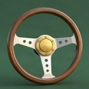
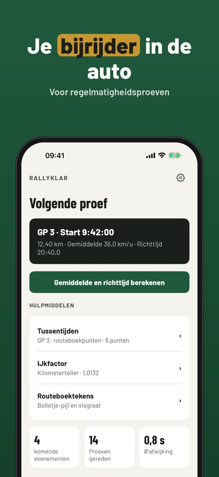
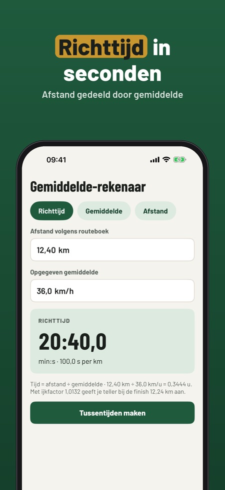
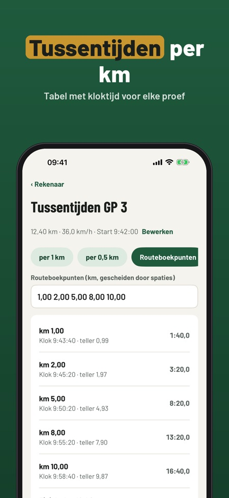

Gemiddelde, tijden, stopwatch. Gemiddelde en tijd berekenen, tussentijden per proef, kilometerteller ijken en een stopwatch met afwijking – offline in de auto, zonder verplichte GPS.



Rallyklar is de rekenhulp en het notitieboek voor bijrijders in oldtimer-regelmatigheidsritten: alle waarden uit routeboek en kilometerteller vul je zelf in.
De rekenhulp, de ijkfactor en één rit kun je zonder aankoop gebruiken. De volledige versie is een eenmalige aankoop voor tussentijden, stopwatch, onbeperkte ritten en uitslagen. Geen abonnement.
Rallyklar is een reken- en notitiehulp. Het reglement van de organisator geldt altijd. Niet verbonden aan organisatoren of clubs.